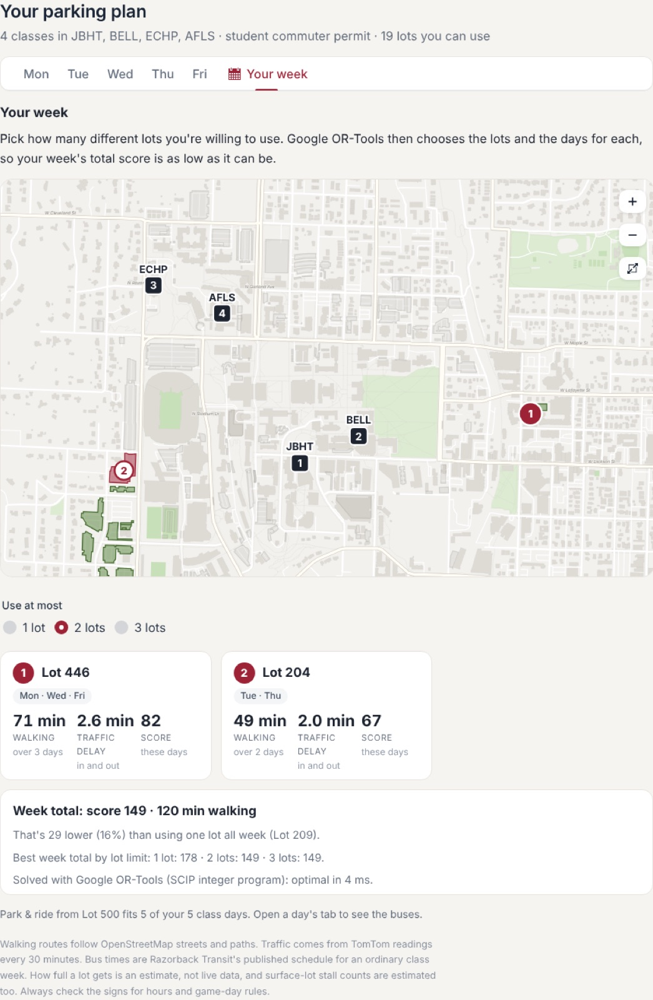
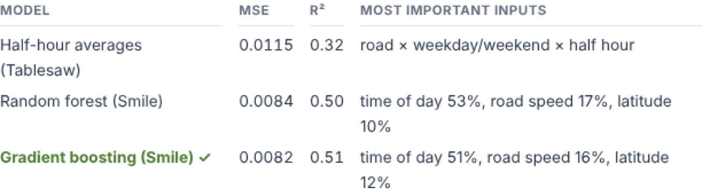
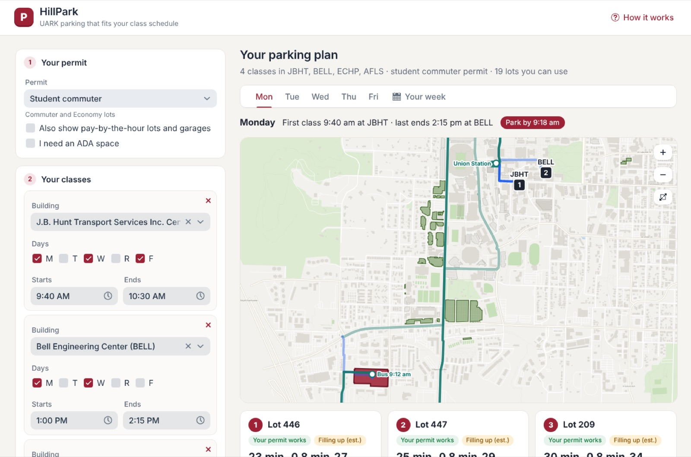

UARK parking that fits your class schedule. Enter your permit and your classes, and HillPark ranks the lots you're allowed to use by walking time, driving time and traffic, then plans your whole week.
My part: the data HillPark runs on. I built the dataset of 110 lots and garages with their permit rules, and the traffic logger whose readings train HillPark's forecast. Ryan led the application code.

The problem
The university sells about 21,000 car permits for roughly 14,600 spaces. Picking the wrong lot means circling, a long walk across campus, or sitting in traffic on Razorback Road. HillPark turns the question "where should I park?" into one clear answer per class day.
Picking lots for the week with OR-Tools
Parking in one lot all week is simple, but two lots can be much better if your Tuesday and Thursday classes are across campus. HillPark solves a small integer program to choose the best one to three lots:
It's the p-median facility-location model, with class days as customers and lots as facilities, solved with SCIP and checked against brute force in the tests. In the example week, two lots beat one by 16%.

Forecasting traffic with SMILE
HillPark predicts how slow each road into campus will be from its location, road type, normal speed, day of week and time of day. Random forest and gradient boosting models are trained on the TomTom log and tested on the newest 20% of readings, days the models never saw.
Gradient boosting scored R² = 0.51 and random forest 0.50, against 0.32 for plain half-hour averages.

Real permit rules and park & ride
HillPark only suggests lots your permit allows, following the 2026–27 Transit & Parking rules. It also finds the latest Razorback Transit bus from the Economy lot that gets you to your first class on time, and compares it with driving.
